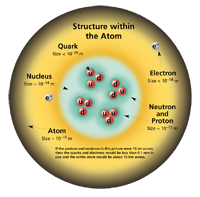

The Standard Model
The Standard Model of particle physics is a theory that describes three of the four known fundamental interactions between the elementary particles that make up all matter. It unifies the electroweak theory and quantum chromodynamics into a structure denoted by the gauge groups SU(3)×SU(2)×U(1). It is a quantum field theory developed between 1970 and 1973 which is consistent with both quantum mechanics and special relativity. To date, almost all experimental tests of the three forces described by the Standard Model have agreed with its predictions. However, the Standard Model falls short of being a complete theory of fundamental interactions, primarily because of its lack of inclusion of gravity, the fourth known fundamental interaction, but also because of the eighteen numerical parameters (such as masses and coupling constants) that must be put "by hand" into the theory (rather than being derived from first principles).
In physics, the dynamics of both matter and energy in nature is presently best understood in terms of the kinematics and interactions of fundamental particles. To date, science has managed to reduce the laws which seem to govern the behavior and interaction of all types of matter and energy we are aware of, to a small core of fundamental laws and theories. A major goal of physics is to find the 'common ground' that would unite all of these into one integrated model of everything, in which all the other laws we know of would be special cases, and from which the behavior of all matter and energy can be derived (at least in principle). "Details can be worked out if the situation is simple enough for us to make an approximation, which is almost never, but often we can understand more or less what is happening." (Feynman's lectures on Physics, Vol 1. 2-7)
The standard model is a grouping of two major theories – quantum electroweak and quantum chromodynamics – which provides an internally consistent theory describing interactions between all experimentally observed particles. Technically, quantum field theory provides the mathematical framework for the standard model. The standard model describes each type of particle in terms of a mathematical field